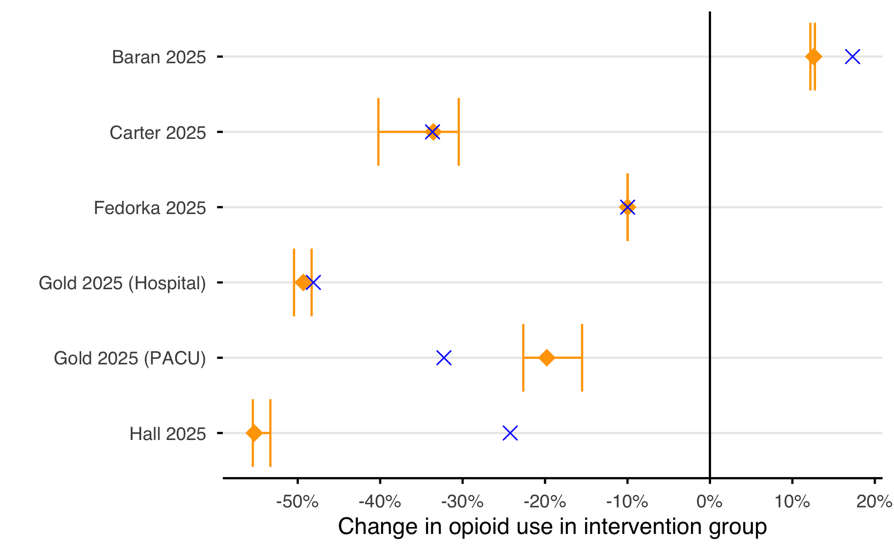

![]()

1 Manuscript
1.1 Introduction
There is a wide variety of opioids used across the range of clinical specialities and patient groups, each with their own potency to provide analgesia1. Opioid conversion values offer the ability to convert a specific opioid into the equivalent units of a reference opioid, to produce equi-analgesic doses measured in oral morphine equivalent (OME) or milligram morphine equivalent (MME), depending on the reference.
We define the total opioid burden (TOB) as the generalisation of the reference-specific metrics OME and MME, estimating the summed analgesic exposure through opioid medications to a patient. Formalised, TOB is the weighted sum of the dose \(d\) for medication \(i\) in the set of medications \(\mathbf{M}\) multiplied by the conversion value \(c\) for a given route \(r\) (Equation eq-ome).
\[\text{TOB} = \sum_{i\in\mathbf{M}} d_i c_{i,r} \tag{1.1}\]
A number of conversion value tables have been published in an attempt to provide a “best estimate” of the conversion values between opioids2–4. Within clinical practice, these cited value tables are conventionally treated as a good surrogate for the true conversion value5. However, these values have been co-opted to produce metrics used in research despite a lack of clear methodological quality assurance. A commonly used, and often primary, outcome in perioperative analgesic studies is the difference in opioid requirement between groups, as measured by comparing the arithmetic mean of summed TOB.
There is an implicit claim that once converted, it no longer matters which opioids a patient receives. However as demonstrated by the STRATOS guidance, misspecified weights with differential exposure leads to measurement error6. Mathematical proof in sec-proof demonstrates that this is true if either following conditions are satisfied (Equation eq-logic):
There is no error in any of the conversion values used
The mean dose of all medication between groups are equal
If one of the possible conditions is not satisfied exactly, a measurement bias arises that can skew or even invert the results of a study. In this simulation study we aim to quantify the extent of this bias and to estimate the impact on the current body of literature.
1.2 Methods
Two simulation studies were performed to understand the extent and impact of the bias on studies comparing group mean differences in TOB (sec-sims). The first simulation explores the the parameter space between groups with inversely distributed opioids groups and conversion values with errors of \(\pm\) 100% of a “ground truth” value. The second, simulates a realistic hypothetical study of 180 participants to analyse the effect of robotic surgery on pain, using an “exogenous shock” to vary the inter-group opioid proportions and varying conversion values to vary the error. The outcome in both simulations was the degree of bias, estimated by measuring the observed difference compared to the expected difference in group mean TOB.
To assess the current practices of TOB methodology and reporting in perioperative research a exploratory literature search was performed (sec-lit-review). After screening, data was extracted from a random subset of 20% of the eligible studies. For manuscripts that reported the group mean doses of each opioid, it was attempted to recalculate the outcomes as a point estimate and then as a minimum and maximum using a range of different conversion values. A literature search protocol was then formalised (sec-sm-lit-protocol) and registered on the Open Science Framework.
No ethical approvals were required for this study. All simulations were performed in R version 4.6.1 (2026-06-24) and code is available on Github. Methods are reported with the relevant guideline7, 8.
1.3 Results
The first simulation illustrates Equation eq-logic, if either condition is met the observed difference is equal to the expected difference and there is no bias. The bilinear bias that arises from either a difference in opioid proportions (with no treatment effect) or conversion value error combine to diverge the true and observed associations further apart.
The second simulation shows that this bias is clinically relevant under the realistic conditions of the hypothetical study. A true treatment association of -10% (-5 TOB mg) with a \(\epsilon_\text{oxycodone}\) of -14% is observed to have a bias of -27%(1.371 TOB mg). However under a range of experimental conditions, the measurement bias can vary between 284% (-14.19) and -166% (8.29) of the true associational effect potentially inverting the study results.
The exploratory review included 83 eligible studies that underwent primary data extraction, of which 27 (33%) stated the conversion values used while 8 (10%) reported the proportion of opioids between groups. Of which, only 5 studies provided the within group mean opioid doses to allow the calculation of the outcome metrics independently.
Figure fig-1 shows the study reported outcome alongside the calculated outcome for each of the 5 studies reporting mean doses. This demonstrates the difficulty replicating metrics due to the number of calculation assumptions. In studies with single opioids (Fedorka 20259) the bias is minimal however in studies investigating different analgesic treatments (Carter 202510) a substantial bias arises.
1.4 Discussion
In observational research, it will be rare for the result to have no measurement bias. The influence of the bias in the conversion value is a considerable problem; the degree of error to the biological ground truth can never be known and estimates very11, 12. Where a non-zero treatment association exists (\(\Delta \mu^0 \neq 0\)), condition 2 cannot hold, because \(\Delta \bar d_i = 0 \; \forall i\) implies \(\Delta D = 0\) and hence \(\Delta \mu^0 = 0\).
An RCT may offer hope of reducing the TOB bias, however if a collider bias occurs (where the treatment itself has an effect on the choice of analgesia used13) or the post-operative analgesia treatment is not protocolised, the mean doses between groups will diverge and the bias will increase. Regardless of the design, any study reporting TOB outcome metrics should assess the degree of bias in the context of the minimum clinically important difference to ensure the results and conclusions are interpreted accurately.
This study is limited by only simulating a two opioid paradigm and by comparing group means; the extent of the bias in multiple opioid studies or comparison of group medians has not been investigated. Furthermore, the literature search was exploratory rather than systematic and may not be representative of the wider literature.
We recommend:
All studies using opioid equivalence metrics must publish the mean doses of the opioids within each group and conversion tables used.
Further work to estimate the true population level opioid conversion values.
1.
Bhatnagar M, Pruskowski J. Opioid Equivalency. StatPearls Treasure Island (FL): StatPearls Publishing; 2026.
2.
McPherson MLM. Demystifying opioid conversion calculations: A guide for effective dosing. Bethesda, MD: American Society of Health-System Pharmacists; 2010.
3.
Nielsen S, Degenhardt L, Hoban B, Gisev N. A synthesis of oral morphine equivalents (OME) for opioid utilisation studies. Pharmacoepidemiology and Drug Safety 2016; 25: 733–7
4.
Dowell D, Ragan KR, Jones CM, Baldwin GT, Chou R. CDC Clinical Practice Guideline for Prescribing Opioids for Pain — United States, 2022. MMWR Recommendations and Reports 2022; 71: 1–95
5.
Mercadante S, Adile C, Ferrera P, Grassi Y, Cascio AL, Casuccio A. Conversion ratios for opioid switching: A pragmatic study. Supportive Care in Cancer 2023; 31: 91
6.
Keogh RH, Shaw PA, Gustafson P, et al. STRATOS guidance document on measurement error and misclassification of variables in observational epidemiology: Part 1—Basic theory and simple methods of adjustment. Statistics in Medicine 2020; 39: 2197–231
7.
Morris TP, White IR, Crowther MJ. Using simulation studies to evaluate statistical methods. Statistics in Medicine 2019; 38: 2074–102
8.
Moher D, Shamseer L, Clarke M, et al. Preferred reporting items for systematic review and meta-analysis protocols (PRISMA-P) 2015 statement. Systematic Reviews 2015; 4: 1
9.
Fedorka CJ, Tornberg HN, Rivera-Pintado C, et al. Liposomal Bupivacaine + Bupivacaine Versus Bupivacaine Interscalene Nerve Block Effect on Pain After Rotator Cuff Repair: A Randomized Control Trial. J Am Acad Orthop Surg United States; 2025; 34: e2216–25
10.
Carter M, Narayanan R, Toci G, et al. Inpatient Multimodal Pain Regimens Do Not Impact Hospital Length of Stay or Long-term Postoperative Opioid Use Following 1 and 2-Level Lumbar Fusion. Clin Spine Surg United States; 2025; 38: 368–73
11.
Rennick A, Atkinson T, Cimino NM, Strassels SA, McPherson ML, Fudin J. Variability in Opioid Equivalence Calculations. Pain Medicine 2016; 17: 892–8
12.
Yessaillian A, Reese M, Clark RC, et al. A systematic review of morphine equivalent conversions in plastic surgery: Current methods and future directions. Journal of plastic, reconstructive & aesthetic surgery: JPRAS 2024; 95: 142–51
13.
Pearl J, Mackenzie D. The book of why: The new science of cause and effect. London: Penguin Books; 2019.